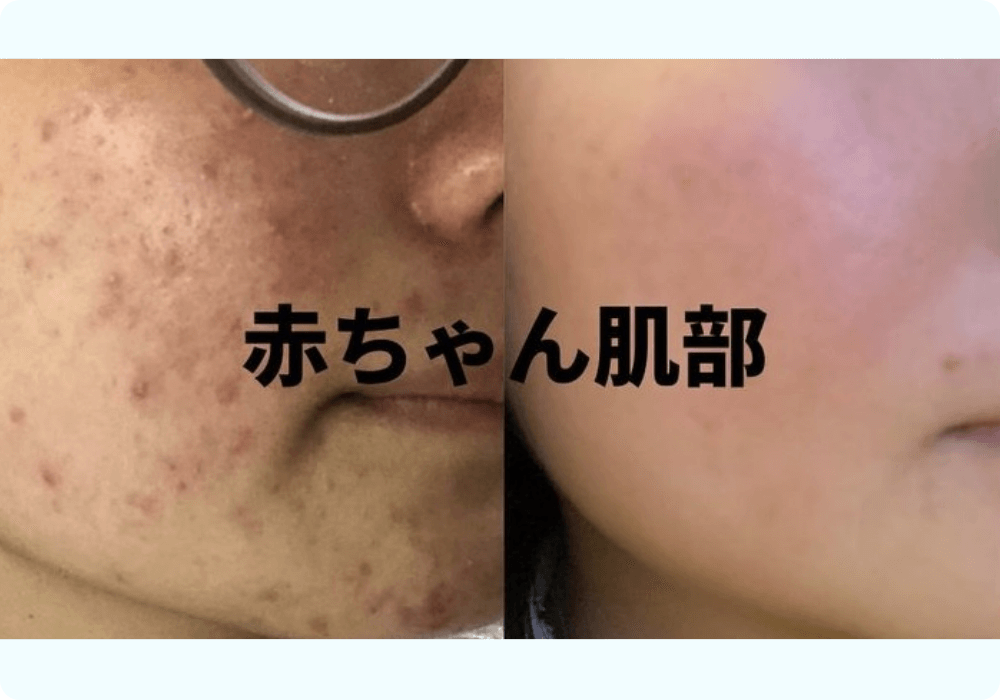
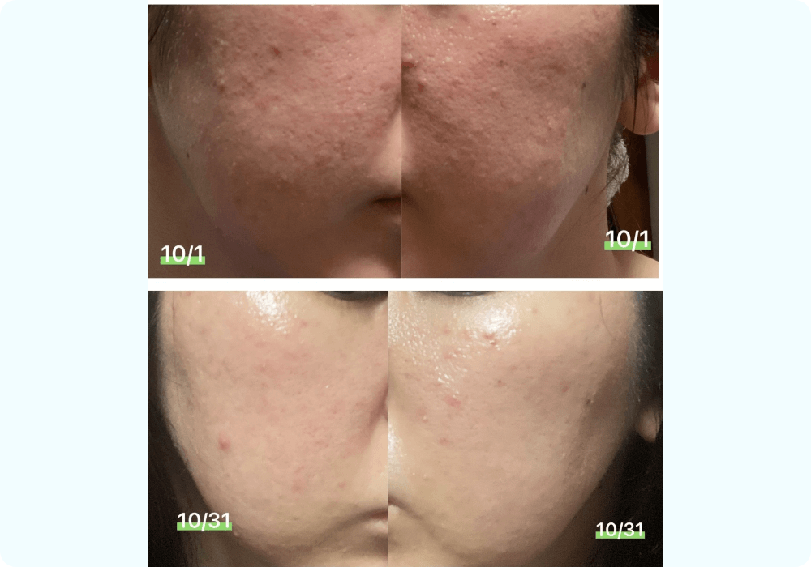
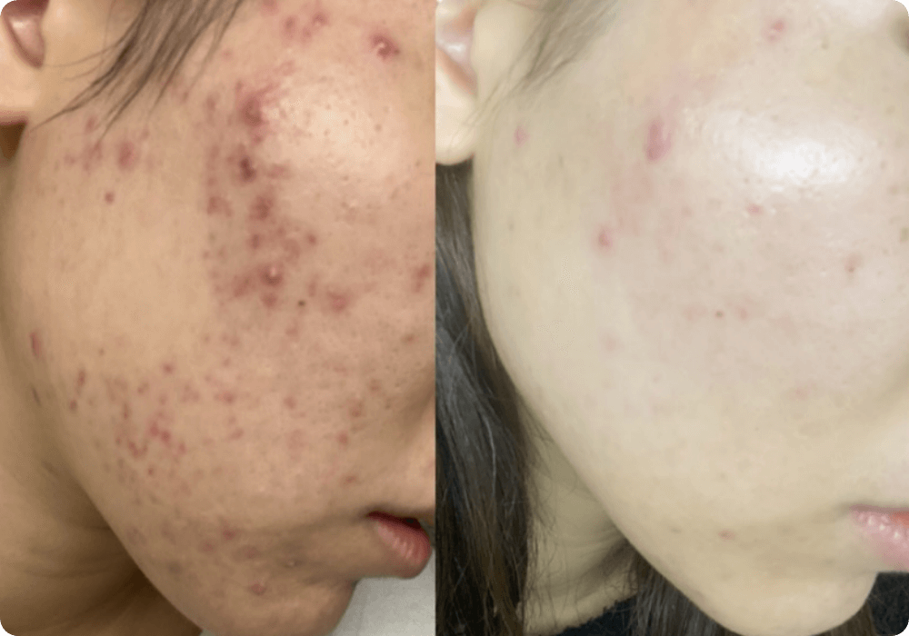

ワーク回答に
ログインはいりますか？
まずはあなたと同時期に
入部し卒業した
部員さんの
劇的変化をご覧ください。
あなたと同じ赤ちゃん肌部の
セルフケアをやった方達ですが
ここまで肌荒れ改善されてきました。
画像をスライドor矢印を押すと
他の画像もご覧になれます！
- 
- 
- 


正直、整形級の変化ですよね！
どうやったらここまで変われるんですか？
というお言葉をよくいただきますが
お渡しする情報は
全く同じです。
シルバープランの方だけ
もらえる情報が少ない、
なんてことは全くありません。
でも今もしかしたら
ここまで変化できてない…
と落ち込む方も
いらっしゃるかもしれません。
じゃあ、なんで
ここまでの変化に差があるのか。
「自分はここまでなれてない」
と感じた方は
もしかしたら
不安に思われたかもしれません。
でも大丈夫です。
不安に思わないでください。
ご存知の通り、私は
頼ってくれる人全員に
綺麗になってほしい、
そんな思いで赤ちゃん肌部を
続けています。
だから、シルバープランで
やり取りをしていないからといって
なりたい肌になれないまま
放っておくのは違う。
そう思い、ある調査をしました。
シルバープラン卒業時に、
- お肌への効果を感じたか
- なりたい肌に100%なれたか
- 入部してから今までやってきたこと
これをアンケートとして
聞いたことがあるんです。
まだ自分の肌に満足してない方、
満足している方を細かく比較した時に、
前者には決定的に足りない部分が
ありました。
それは…
正しい情報を
活用できていないことでした。
先ほどもお伝えした通り
シルバープランでも、
最後まで満足いく肌に変わった方は
多くいます。
そういう方は、
60日間で取り組んだことの
正確さがほぼパーフェクトでした。
一方、まだ肌の効果に満足してない方は
取り組んだことが、微妙に間違っていたり
思ったほど完璧にはできていなかったり。
認識のズレで
無意識に間違ったことをしている
そんな共通点がありました。
いくら頑張っても
間違った情報を頼りにしていたり
正しい努力の方向がわからないと
頑張った努力が実を結ぶことはない。
なりたかった自分にも
近づけず、なかなか距離が縮まらない。
もしそんな方がいたら
時間と努力の分が
勿体無いですよね。
赤ちゃん肌部に入部を決意してくれたのも
とてつもなく勇気がいったと思うんです。
せっかく勇気を出して
一歩踏み出してくれたんだから
この赤ちゃん肌部を
最大限に自分のものにしてほしい。
私がなんとかしてあげたい。
私が支えてあげたい。
私がもっとあなたを支えられる
サポートを立ち上げたい。
人間の可能性は無限大です。
あなたの肌はいくらでも変わります。
ニキビや毛穴が酷くて
いつも鏡に向かって
自分を嫌いになる日々は終わりです。
鏡どころか
街ゆく店のガラスに映る自分さえ
１秒でも長く見たくなる肌に。
洗顔をするたびに
自分の肌がツルツルしていることに
喜びを噛み締めて欲しい。
彼が好きな髪型のポニーテールをして
一緒に遊びに行って欲しい。
女友達からだって
「なんでそんなに肌綺麗になったの？！」
と美の秘訣を聞かれ
女子力のある女性に見られる喜びを
感じて欲しい。
私から、
理想の未来へと向かう正しい努力を
サポートさせて欲しい。
私によって
最大限に理想の肌へと導かせてください。
全ては、わたしを信じて
付いてきてくださったあなただからこそ
「もっと何かしたい」と思っています。
あなたを救える準備は
できてます。
ではここで
私からあなたに向けて
RUIワークday３を出します。
ワーク回答してくださった方には
先日お渡しした美肌テキストの続編を
お渡しします！
その前に次回予告をさせてください。
次回予告
今回の配信では、
「赤ちゃん肌部に入っているのに
まだ理想の肌には追いついてない。」
この原因をお伝えしました。
でも、私はあなたを
必ず赤ちゃん肌に導きたいです。
ついに赤ちゃん肌部パーフェクトも終盤です。
明日、あなたにうってつけの「企画全貌」を
公開します。
RUIワーク３
赤ちゃん肌部の
シルバープランに参加して
あなたなりに、
たくさん努力してきたと思います。
そんな中で、
「ここが難しかった」
「こんなサポートがあればよかった」
「ここ不安だった」
という、認識のずれポイントを
教えてください。
（回答画面に飛びます）
今後、このズレを徹底的に修正して、
赤ちゃん肌部の内容を
もっと最大限に引き出していきましょう！
ワーク回答をしてくださったら
お返事としてLINEにて
美肌テキストの続編をお渡しします！
第3章
RUIが必ず行う
肌荒れが消えていく美肌習慣

私はスキンケアに何万円もかけたり
1時間も2時間もかけてなんかいません。
その代わりに
日中に美肌ケアを散りばめています。
しかも習慣にまで
落とし込んでいるので
無意識のうちに
美肌ケアをこなすことができます。
このケアを特別に
あなただけにお伝えします。
今しかないこのチャンス、
ぜひ美肌テキストを
受け取ってください！
ワーク回答について
よくある質問
ログインなど一切無しで
ご回答いただけます。
通信量は大きいですか？
ほとんどかからないので
お気軽にクリックください。
ワーク回答したら
どこからテキストを
見ることができますか？
ワーク回答を完了すると、
すぐにLINEでテキストを
お送りいたします！
回答が終わったら、
回答画面を閉じて
LINEトークからテキストが
送られていることを
ご確認ください。
追加で回答したいことが
あったんですが、
２回回答しても良いですか？
回答はお一人様１回まで
でお願いします！
ブラウザを変えて回答すると、
確認が取れずテキストを
お渡しすることができません。
必ずLINEアプリから移動せずに
ご回答をお願いします。
回答が難しいです。
ひとことでもいいので、
お気軽に送信してください！
内容によってテキストを
受け取られなくなることは
決してありません！
あなたの回答を待っています。
RUI